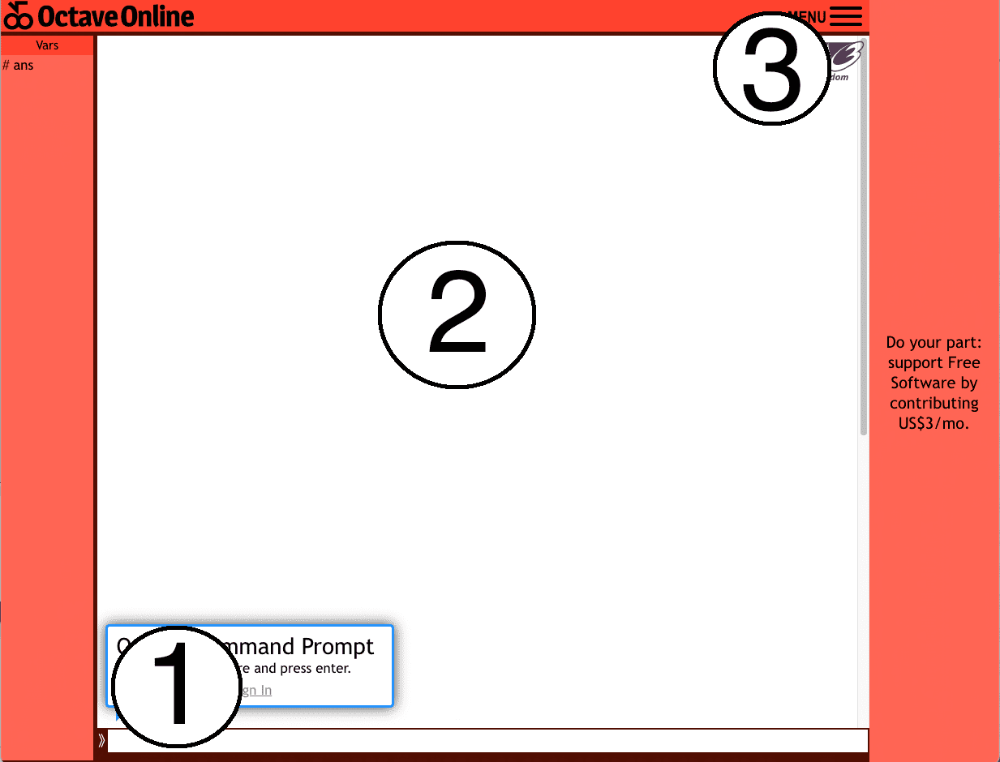
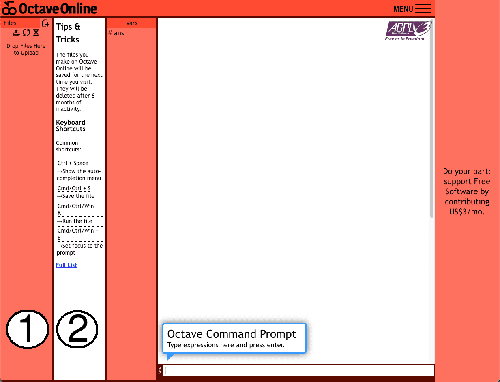
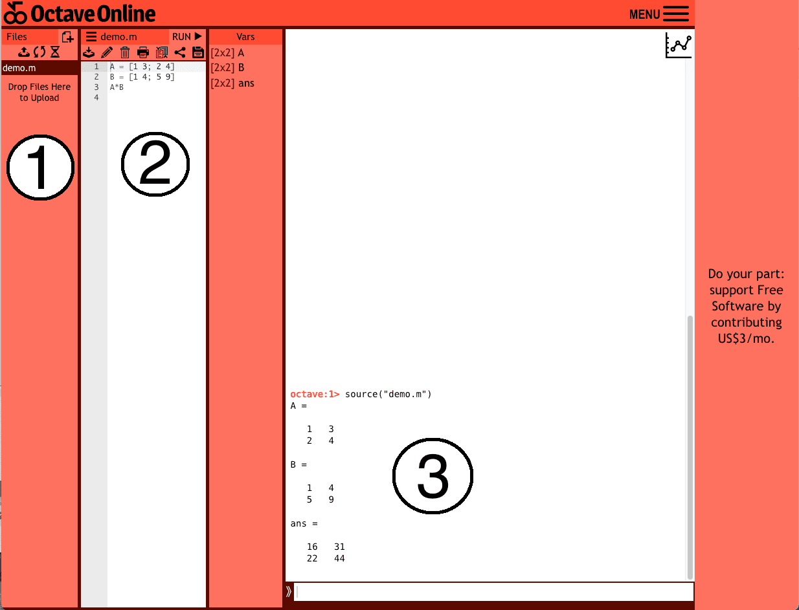

打開
octave-online 的網頁後，所見如下圖。
圖中標示 1 號區塊的是輸入窗格，也就是輸入指令的地方，而指令的計算結果會呈現在圖中標示 2 號的區塊（結果窗格）。
標示 3 號的則是登入的位置，如果你只是打算簡單的當個計算機使用，是不需要登入的。

當你註冊並登入後，你會看到 OCtave 的介面長相不太一樣了，這也是登入的優勢：Octave 允許用戶儲存先前用過的檔案，也能夠運行一個比較長的程式碼。
圖中標示 1 號的位置就是所有已儲存的檔案，同時也是新增或上傳現有檔案的位置。
圖中標示 2 號的位置則是編寫檔案內容的位置，下面給一個範例。

這是運行範例：在標號 1 的位置，可見我有一個檔案名為 “demo.m” （注意副檔名均為 .m）。
而標號 2 的區域則是 demo.m 檔案裡已經編寫完畢的程式碼（簡單算兩個矩陣相乘），記得每次編寫完畢都要『儲存』之後再按『run』，這樣在標號 3 的區域呈現的才會是你標寫後的程式碼的結果。

當然 Octave 有可以安裝在桌機上的版本，就可以不用開網頁運算了，如果有比較大的計算需求，推薦使用桌機版的。
但是這邊就不詳細介紹了，畢竟這只是線代的 Octave 教學，目的只是讓你們可以有個方便驗算答案的方法而已。